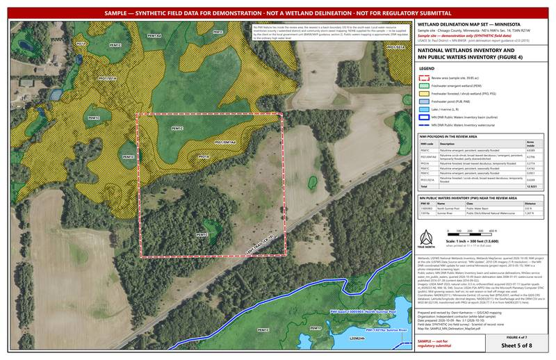
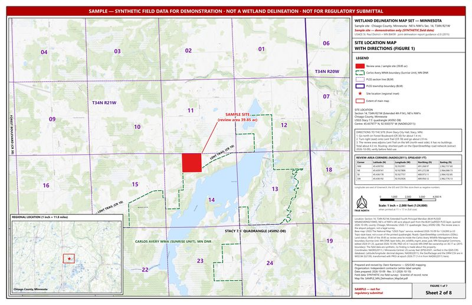

Minnesota
A 39.85-acre review area in Chisago County: site location with directions, topography, soils, the National Wetlands Inventory and the MN Public Waters Inventory, FEMA flood, aerials, and the final delineation with Circular 39 and Eggers & Reed wetland types.


Select an image for a larger view; the PDF has the full detail.
- Map set, 8 sheets PDF, 9.3 MB
- CAD and GIS files DXF; 13 shapefile layers in state plane, a WGS 84 GeoPackage, the ORM aquatic-resources table (CSV) and metadata. On Google Drive.